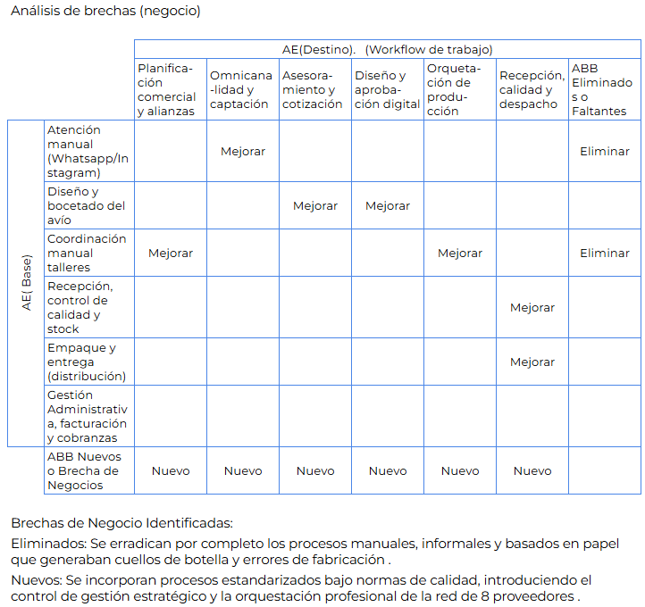
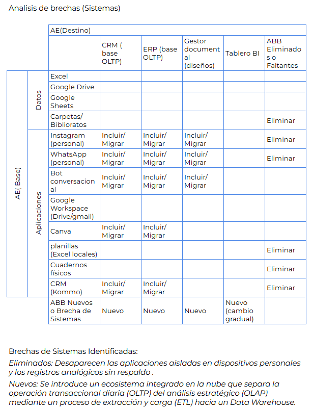
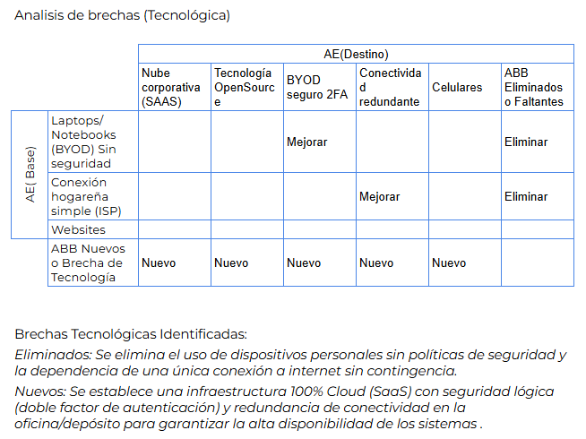

Matriz de brechas
Matrices de brechas
Para la construcción de la matriz de brechas de Avios Lynch, se compararon los Bloques de Construcción de Arquitectura (Architecture Building Blocks - ABB) de la Arquitectura Empresarial Base (AS-IS relevada en T-02) frente a la Arquitectura Empresarial Destino (TO-BE definida en T-03).
El resultado del análisis se consolida en la siguiente matriz y se vincula con la planilla detallada del equipo:
Matriz Consolidada de Brechas (AS-IS vs TO-BE)
Dominio | ABB Arquitectura Actual (AS-IS) | Estado / Intersección | ABB Arquitectura Destino (TO-BE) | Naturaleza de la Brecha | Tratamiento Sugerido |
|---|---|---|---|---|---|
Negocio | Atención manual de consultas por WhatsApp e IG | Eliminado | Agente Conversacional / Bot de Bienvenida e IA | Nuevos ABB | Adquisición / Configuración SaaS |
Negocio | Registro comercial en Excel individual / Hoja suelta | Eliminado | Proceso Comercial Estandarizado (Workflow) | Nuevos ABB | Rediseño e Implementación |
Negocio | Registro administrativo contable en papel/biblioratos | Eliminado | Gestión Administrativa e Integración Digital | Nuevos ABB | Rediseño y Migración |
Negocio | Coordinación informal de producción (Email/WhatsApp) | Eliminado | Orquestación Digital de Talleres y Proveedores | Nuevos ABB | Estandarización de SLA |
Datos | Planilla Excel suelta de prospectos y ventas | Eliminado | Base de Datos Transaccional Unificada (OLTP) | Nuevos ABB | Migración y Depuración (Cleansing) |
Datos | Archivero físico de oficina y carpetas locales | Eliminado | Repositorio Documental Cloud con Control de Versiones | Nuevos ABB | Estructuración en la Nube |
Datos | Ausencia de métricas y datos analíticos | Nuevos ABB | Capa Analítica y Repositorio de Indicadores (KPIs) | Nuevos ABB | Construcción de Data Warehouse/Mart |
Aplicaciones | WhatsApp Business / IG sueltos sin integrar | Eliminado | Bandeja Omnicanal Centralizada (CRM) | Nuevos ABB | Adquisición / Implementación SaaS |
Aplicaciones | Hojas de Cálculo (Google Sheets) aisladas | Eliminado | Módulo ERP (Administración, Stock, Compras) | Nuevos ABB | Adquisición / Implementación |
Aplicaciones | Canva / Email informal para diseños | Modificado/Incluido | Gestor Documental Integrado con Aprobación Digital | Nuevos ABB | Integración Cloud |
Aplicaciones | Inexistente | Nuevos ABB | Herramienta BI / Tableros de Control con KPIs | Nuevos ABB | Implementación BI |
Tecnología | Equipos Personales BYOD sin controles corporativos | Incluido | Dispositivos BYOD con Política de Seguridad y 2FA | Reestructurado | Aplicación de Políticas |
Tecnología | Conexión Internet Residencial sin SLA ni redundancia | Incluido | Acceso Cloud Redundante / Conectividad Móvil (4G/5G) | Reestructurado | Redundancia Técnica |
Tecnología | Inexistente (Sin Servidores ni Backups) | Nuevos ABB | Nube Corporativa Segura (SaaS) con Backups Automáticos | Nuevos ABB | Suscripción Cloud |
Se adjunta y vincula la planilla de cálculo de brechas detallada correspondiente al análisis técnico del equipo en el repositorio general.



ABB Candidatos para el proyecto del equipo de consultoría
Dentro del universo de brechas identificadas en la matriz anterior, el equipo de consultoría selecciona y prioriza los siguientes Bloques de Construcción de Arquitectura (ABB) candidatos para constituir el alcance directo del proyecto de consultoría en Avios Lynch:
- ABB-COMP-01: CRM Comercial y Gestión Omnicanal (Kommo CRM)
- Justificación: Ataca directamente el cuello de botella crítico expresado por el sponsor (saturación de WhatsApp/Instagram) y responde al Objetivo Estratégico 1 (US-01). Permite unificar las consultas de redes en una sola bandeja, evitando la pérdida de prospectos y permitiendo el seguimiento de leads.
- ABB-COMP-02: Agente Conversacional / Bot de Bienvenida con Filtrado Inicial
- Justificación: Resuelve la atención inmediata de la demanda entrante 24/7, automatizando la respuesta inicial (precios base, catálogos, equivalencias) para derivar al vendedor únicamente consultas calificadas y que sigan la gestión. En esa etapa se validaría la configuración del CRM KOMMO para lograr esta automatización.
- ABB-COMP-03: ERP+CRM (Gestión Integrada) y Dato Único de Pedido (Módulo Open Source / SaaS)
- Justificación: Erradica el uso del papel y las planillas descentralizadas en todos los sectores involucrados de la organización (administración, ventas, logística/depósito, etc), respondiendo al Objetivo Estratégico 2 (US-02, US-03 y US-04). Conecta la cotización, la aprobación del diseño, la orden de compra a talleres externos y la facturación/cuentas corrientes bajo el concepto de "Dato Único de Pedido", envíos al cliente de su pedido, entre otros.
- ABB-DAT-01: Repositorio Documental Centralizado de Diseños (Cloud Storage)
- Justificación: Satisface la necesidad de resguardo y control de versiones de bocetos (US-05). Garantiza que no se envíen a fabricar versiones de diseños no aprobadas a los 8 talleres proveedores, eliminando costos por reprocesos y protegiendo el activo de la empresa ante contingencias o bajas de personal.
- ABB-ANA-01: Tablero de Control Operativo y Comercial (Dashboard de KPIs / BI)
- Justificación: Satisface el Objetivo Estratégico 3 (US-04). Transforma la toma de decisiones basada únicamente en la facturación mensual en un modelo basado en datos reales (tiempos de respuesta, tasa de conversión de clientes, volumen de pedidos por estado, tiempos de entrega de proveedores, etc).
Escenarios de solución
Modelo de escenarios posibles
Modalidad del producto ➡ <br/> Modalidad de implementación ⬇ | On-premises | SaaS | Desarrollo a medida | Combinado en la nube | Open Source |
|---|---|---|---|---|---|
Big Bang | Escenario 1 | Escenario 3 | |||
Modular | Escenario 2 | Escenario 4 | Escenario 8 | Escenario 5 y 6 | |
Piloto | Escenario 7 | ||||
Paralelo | Escenario 9 |
Para analizar los escenarios de Avios Lynch partimos de las dos dimensiones que propone la cátedra, modalidad del producto y modalidad de implementación, y les sumamos algunas categorías más que nos parecieron relevantes para este caso. Todo esto lo aplicamos sobre las soluciones que definimos para cubrir las brechas: la atención automatizada con catálogo web, la gestión comercial, la gestión de pedidos y el tablero de indicadores.
Lo que sigue no es una elección todavía. Es una guía con las ventajas y desventajas de cada categoría, pensadas para la realidad de Avios Lynch, para que cuando tengamos que definir la solución sepamos con qué estamos comparando.
Modalidad del producto
Esta dimensión tiene que ver con dónde vive el software y cómo se paga.
On-premises: El sistema se instala en equipos o servidores de la propia empresa, que compra el hardware y las licencias y se hace cargo del mantenimiento. A favor: los datos quedan bajo control total, se puede trabajar sin internet dentro de la oficina y, una vez pagado, no hay cuota mensual. En contra: hay que comprar un servidor y licencias, alguien tiene que mantenerlo, el acceso remoto se complica para la diseñadora en Salta y para los celulares del equipo comercial, y los backups corren por cuenta de la empresa.
SaaS: Se usa por internet pagando una suscripción mensual, y es el proveedor el que se ocupa de la infraestructura, las actualizaciones, la seguridad y los backups. A favor: no hace falta infraestructura ni gente técnica, se accede desde cualquier dispositivo y lugar, y el costo de entrada es bajo. En contra: la cuota es permanente y muchas veces en dólares, se depende del proveedor y de las funciones que él decida ofrecer, los datos quedan en servidores de terceros y todo depende del wifi hogareño de la oficina.
Desarrollo a medida: Se contrata a alguien para que construya un sistema propio desde cero. A favor: se adapta al 100% a cómo trabajan, incluida la coordinación con los talleres externos, no tiene cuota mensual y los datos son propios. En contra: la inversión inicial es alta, el desarrollo lleva meses, las integraciones con WhatsApp e Instagram hay que armarlas desde cero y cada cambio o error depende siempre de quien lo desarrolló.
Híbrido: Una parte del sistema está en la nube y otra instalada en la oficina. A favor: permite tener en la nube lo que necesita acceso remoto (atención y comercial) y dejar local lo administrativo y más sensible (cuentas corrientes, facturación), con flexibilidad para ir migrando de a poco. En contra: la parte local arrastra los mismos problemas que on-premises, hay dos entornos para mantener e integrar, y es más complejidad de la que suele necesitar una pyme de 7 personas.
Combinado en la nube: Se combinan herramientas SaaS para atención y colaboración con un ERP/CRM open source alojado en la nube y administrado por un proveedor. No requiere servidores locales en Avios Lynch. A favor: permite combinar herramientas para distintas necesidades e integrar la gestión. En contra: requiere planificar las integraciones y definir quién se ocupa del mantenimiento y soporte de cada componente.
Open source: Software de código abierto, sin costo de licencia. Puede ser autogestionado (la empresa lo instala y mantiene) o gestionado por un proveedor que lo aloja y da soporte por una suscripción, parecido a un SaaS pero con software libre abajo. A favor: no se paga licencia, no hay dependencia de un proveedor comercial, existen productos maduros y con comunidades grandes para CRM y gestión, se puede adaptar si alguien sabe hacerlo, y en la variante gestionada la suscripción suele ser más barata que la de un SaaS comercial. En contra: lo gratis es la licencia, no la implementación; alguien tiene que instalarlo, configurarlo, actualizarlo y hacer los backups. El soporte es de la comunidad salvo que se pague a un partner, las integraciones con WhatsApp e Instagram suelen pedir configuración técnica o módulos pagos, y la interfaz puede ser menos amigable para personal no técnico.
Modalidad de implementación
Esta dimensión define cómo se incorpora la solución al día a día de la empresa.
Big Bang: Se pone todo en funcionamiento al mismo tiempo, en una única fecha, y desde ahí se deja de trabajar como antes. A favor: el cambio es único y claro, no hay convivencia con el papel y el Excel, el equipo aprende todo junto y el plazo total es más corto. En contra: todo el equipo cambia a la vez, si falla la adopción falla todo, se paga todo desde el primer día y la capacitación tiene que ser mucha y concentrada.
Modular: Se avanza por etapas, arrancando por lo que más impacto tiene; cada etapa se estabiliza antes de pasar a la siguiente. A favor: se empieza por lo urgente y se ven resultados rápido, el gasto es escalonado, cada etapa se valida antes de seguir y el equipo se adapta de a poco. En contra: durante un tiempo lo nuevo convive con el papel y el Excel, hay riesgo de que las herramientas queden como islas si no se planifica la integración, y el proyecto completo lleva más tiempo.
Piloto: Se prueba la herramienta con un grupo reducido, por un período acotado y con criterios de éxito definidos, antes de extenderla al resto. A favor: la inversión para probar es mínima, se valida con uso real que la herramienta se adapte a cómo venden, los que participan quedan como referentes internos, y si no funciona se cancela sin pérdida. En contra: el alcance es muy limitado, los resultados de pocas personas pueden no representar al resto de la operación, alarga el plazo y, si no se definen bien de antemano los criterios de éxito, la decisión final vuelve a ser subjetiva.
Paralelo: El sistema nuevo y el método viejo funcionan juntos hasta que se apaga el viejo. A favor: es una red de seguridad si algo falla, permite comparar resultados y le baja la ansiedad al equipo. En contra: implica doble carga de trabajo durante la transición (cargar en el sistema y en el papel), tienta a seguir con el método de siempre, cuesta definir cuándo apagar lo anterior y, como acá lo viejo es papel y Excel, la comparación termina siendo limitada.
Análisis de Fortalezas y Debilidades de Escenarios
Escenario | Fortalezas | Debilidades |
|---|---|---|
| Control total sobre los datos, que quedan dentro de la empresa. No depende de internet para trabajar dentro de la oficina. | La empresa no tiene servidores ni personal de sistemas, Y las computadoras son BYOD, así que habría que comprar equipos y contratar soporte de TI. Requiere una inversión inicial alta, que Gabriel tendría que aprobar. |
| La inversión y el cambio se reparten en el tiempo. El equipo se adapta de a poco. | Sigue exigiendo servidores, mantenimiento y soporte técnico que no tienen, con alta inversión. El acceso remoto sigue siendo restringido. Conectar módulos instalados localmente es caro y lento. |
| No necesita infraestructura propia. Se accede desde cualquier dispositivo y lugar, incluida Salta. Los backups y la seguridad los gestiona el proveedor. | Todo el equipo cambia su forma de trabajar al mismo tiempo, con alto riesgo de repetir el abandono del CRM Kommo. Se paga el costo de todos los módulos desde el primer mes. Si falla la adopción, falla todo el proyecto. |
| Cumple todas las restricciones del relevamiento y de la arquitectura empresarial que actualmente tiene. Permite empezar por el problema más urgente (la saturación de consultas) y mostrar resultados rápidos, lo que motiva al equipo. El gasto es escalonado. Cada etapa se valida antes de avanzar. | Si no se planifica bien, las herramientas pueden quedar desconectadas entre sí, lo que hay que planificar bien la incorporación de la nuestra tecnología. Durante un tiempo convivirán lo nuevo con el papel y el Excel. El proyecto completo lleva más tiempo. Depende del Wi-Fi hogareño sin SLA. |
| Sin costo de licencia y suscripción de alojamiento generalmente más baja que un SaaS comercial. Sin dependencia de un proveedor de software: si el que aloja no sirve, se puede migrar a otro con los mismos datos. Productos maduros que cubren las áreas comercial, pedidos, stock y facturación en una misma plataforma, lo que favorece el Dato Único de Pedido. Se avanza por etapas, atacando primero las consultas. Acceso desde cualquier dispositivo, como un SaaS. | La configuración inicial es más técnica que en un SaaS comercial y requiere un implementador con experiencia en ese producto bajo esta modalidad, la mayoría no cuenta con un instalador único. Las integraciones con WhatsApp e Instagram suelen depender de módulos de terceros, a veces pagos, y su calidad varía. Algunos pueden tener una interfaz menos pulida para personal no técnico, con riesgo de repetir el abandono si la capacitación no acompaña. El soporte depende del proveedor de alojamiento o de la comunidad. Requiere un implementador especializado y definir el alcance del soporte, las actualizaciones y los respaldos contratados. Las integraciones con WhatsApp e Instagram pueden necesitar componentes adicionales y generar costos. Deben validarse la facilidad de uso y la cobertura funcional, acompañando al equipo con capacitación para reducir el riesgo de abandono. |
| Costo de licencia cero y control total de la instalación y los datos. Máxima libertad para adaptar el sistema. | Alguien tiene que instalar, actualizar, asegurar y hacer backups; actualmente no existe este perfil en la organización, por lo que habría que crearlo y contratar a una persona idónea para dicho puesto. Un error de configuración o una actualización fallida frena la operación |
| Costo casi nulo para probar. Permite ver si la interfaz y la integración con WhatsApp son aceptables para el equipo antes de comprometerse. | Aun el piloto necesita configuración técnica inicial, así que el "arranque en un día" es menos probable que con un SaaS comercial. Si el piloto anda bien, el paso a producción igual requiere un implementador. |
8. Combinado en la nube + Modular | Lo que necesita movilidad está en la nube y lo administrativo, que se usa solo en la oficina, queda local. Para la propuesta Saas se priorizan los aplicativos que ya conocen y utilizan y para la propuesta OpenSource se buscará aquellos que cumplan con objetivos y sean “amigables” para el usuario y compatibles con las tecnologías que ya tienen, ya que no implican una inversión de dinero en adquisición. Dentro del Saas, podemos ubicar a carpetas virtuales con accesos restringidos a ajenos al área, y que dejen sus archivos de gestión en la nube. Combina servicios SaaS para atención y colaboración con un ERP/CRM open source gestionado en la nube, sin requerir servidores locales. Permite aprovechar herramientas conocidas cuando cubran los requerimientos e incorporar las capacidades por etapas. La integración propuesta busca centralizar la gestión alrededor del Dato Único de Pedido y mejorar la disponibilidad de información para la toma de decisiones. | Podemos encontrar que las ofertas opensource pueden no ser lo suficientemente abarcativas y que necesiten una curva de aprendizaje para entenderlas, parte de usuario; y de instalarlas, parte de sistemas, ya que al ser BYOD, puede que sea más dificultoso poder instalar si no tienen un instalador dedicado (como pasa en la mayoría de los aplicativos de este estilo) Requiere integrar los servicios SaaS con el ERP/CRM y definir responsables de mantenimiento, soporte y respaldos. El costo total debe contemplar implementación, alojamiento, suscripciones, integraciones y capacitación. La cobertura funcional, la compatibilidad y la facilidad de uso deben validarse. Sin una integración adecuada, existe riesgo de mantener registros separados y duplicar cargas. |
9. SaaS + Paralelo | Red de seguridad: si algo falla, no se pierde nada. Permite comparar el registro nuevo con el viejo y detectar errores de carga. Baja la resistencia del equipo, que no siente que "le sacan" su método. | Doble trabajo para Fabiana, Victoria, Ramiro y Jessica, en un equipo que ya está desbordado. Este posible escenario infiere a que sigan utilizando el papel y nunca terminar de migrar. Hay que fijar una fecha firme de apagado del método viejo, y hacerla cumplir es difícil en una cultura informal poco tecnológica y de poco personal. |
Elección del escenario a ejecutar
Indicar cuál es el escenario seleccionado y la justificación objetiva del resultado.
Se han realizado un debate interno en el equipo en donde se dejaron 3 candidatas teniendo en cuenta cultura organizacional, visión, misión y presupuesto indicado (que no es un monto fijo, sino que es “dependiendo de la propuesta, se evaluará”:
- Escenario 4: Saas + Modular
- Escenario 7: Open source + Piloto
- Escenario 8: Híbrido (SaaS y Open Source) + Modular
De esas 3, se estableció que la propuesta óptima para Avios Lynch es el escenario 8: que establece proponer una solución Híbrida (SaaS Cloud + Open Source gestionado/hospedado) con implementación modular es una jugada maestra de consultoría por tres razones clave:
- Cero impacto en el hardware actual (BYOD): Al correr el Open Source (por ejemplo, alojado en un servidor Cloud de bajo costo, o un stack integrado) en un entorno en la nube, se evitan comprar servidores locales y respetar la restricción de que operan con notebooks personales.
- Ahorro de costos drástico: Al usar Open Source para el ERP/CRM central (gestión, stock, ventas, clientes), se ahorran las licencias por usuario en dólares de softs privativos pesados (empaquetados como SAP, Oracle, etc), pagando únicamente el hosting cloud y la implementación inicial.
- Resuelve el "punto ciego" del dueño (Data-Driven real): al no contemplarse métricas finas (clientes perdidos, caída de recompra, márgenes de costos vs precios), un ERP/CRM Open Source robusto bien parametrizado permite estructurar la Capa Analítica (Data Warehouse / Tableros) para que los tomadores de decisiones vea en un dashboard de celular/equipo exactamente qué clientes dejaron de comprar, qué productos tienen más margen y cómo viene el embudo comercial.
- SaaS de aplicativos conocidos, algunos pueden ser utilizados en el celular y dejan alojados los archivos en carpetas en la nube, lo que inicialmente podría ser una solución transitoria para la falta de servidores y backups, y como solución transitoria para un ERP/CRM más complejos si AVIOS LYNCH crece como empresa (teniendo más empleados).
Propuesta:
- Modalidad del Producto: Híbrido / Open Source Gestionado en Nube. (Se utiliza software de código abierto alojado en un servidor cloud administrado por un partner/proveedor, combinándolo con herramientas SaaS nativas para la mensajería y la atención de redes).
- Modalidad de Implementación: Modular. (No se puede hacer un Big Bang con una cultura que no está habituada a transformarse; se arranca por el módulo comercial/CRM para frenar la pérdida de leads y luego se avanza al ERP de gestión y stock).
- Fortalezas de este escenario para Avios Lynch:
- Independencia y Control de Datos: Los datos son propios y estructurados (se acaba el desparramo en Excel y papel).
- Relación Costo-Beneficio: Sin costos exorbitantes de licencias corporativas, ideal para una Pyme de 7 empleados.
- Saas conocido y cloud storage asociados: Microsoft 365 empresarial o Google Workspace para suplir al modelo de escritorio y dejar alojados en una carpeta virtual los archivos procesados, sin la posible pérdida de datos por rotura de equipo o renuncia de personal. Los archivos están en esa nube que se puede acceder desde cualquier dispositivo.
- Dato Único de Pedido y Visibilidad Gerencial: Integra las puntas (desde que Jessica o Ramiro responden el chat en WhatsApp hasta que Gustavo entrega en depósito y Fabiana factura), alimentando un tablero para que Gabriel tome las decisiones con más detalles y no sólo en base de la facturación.
- Debilidades / Desafíos a mitigar (para mostrar madurez en el trabajo):
- Dependencia de un implementador técnico: Al ser Open Source, la configuración inicial y las integraciones con la API de WhatsApp requieren mano de obra técnica especializada.
- Capacitación intensiva: Al complementar el Excel por un sistema integrado, el equipo administrativo y comercial necesitará acompañamiento estrecho las primeras semanas para no recaer en el papel.
Es una alternativa válida porque combina atención especializada con gestión integrada y no requiere servidores propios. Esta propuesta tiene costos muy bajos especialmente para una MiPyMe con pocos empleados y con una proyección de crecimiento a mediano plazo. Sólo resta definir quién mantiene la solución, cuánto cuesta realmente en el futuro y cómo comprobamos que las herramientas se integran y el equipo las puede usar al crecer la organización.